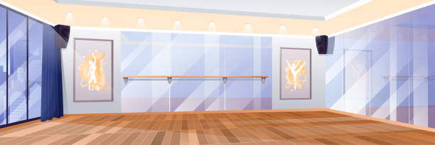
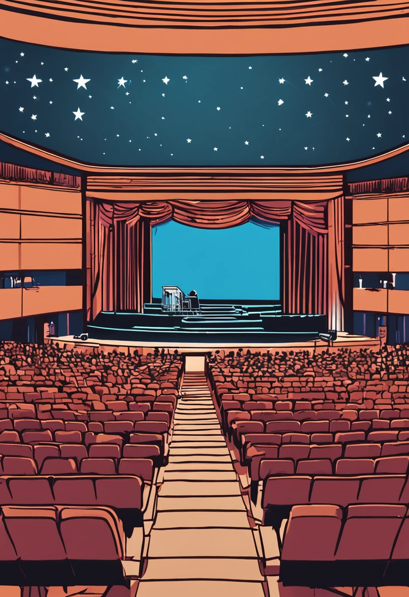
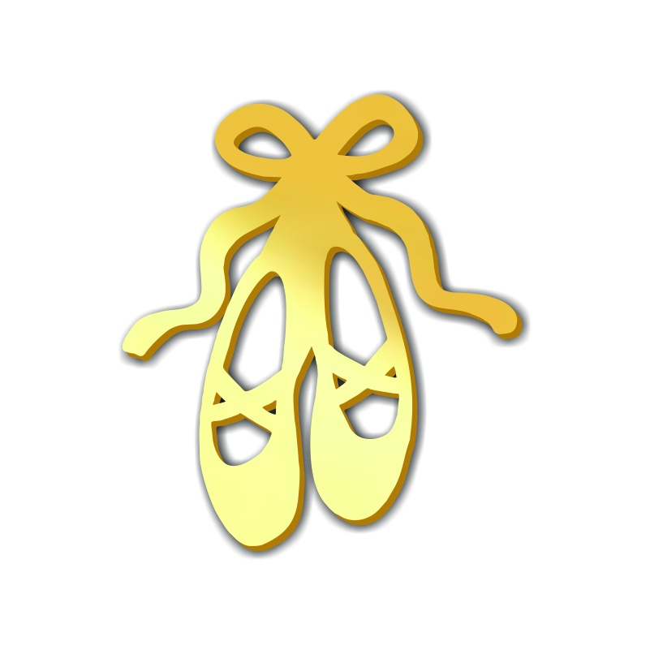

Você entra na sala de ballet, e calça suas sapatilhas, mas sente um formigamento estranho e percebe que em cada sapatilha, há um mapa

Você começa sua jornada entrando no auditório e percebe que em uma das poltronas, há uma dica
Você começa sua jornada no jardim do teatro. Um belo caminho de flores se forma, e te leva a uma bifurcação. Qual você segue?
Você começa sua jornada no jardim do teatro. Um belo caminho de flores se forma, e te leva a uma bifurcação. Qual você segue?
O papel revela que há uma sapatilha de ouro escondida em todo o teatro
Desistir e voltar para aula
Seguir para direita
Seguir para direita
Prosseguir
Voltar e seguir para direita
Seguir a porta de prata
Seguir a porta de diamante

Retirar o quadro
Retornar e tentar a outra porta